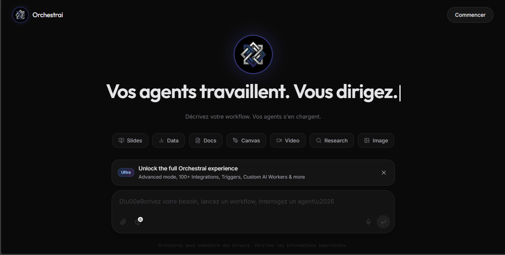
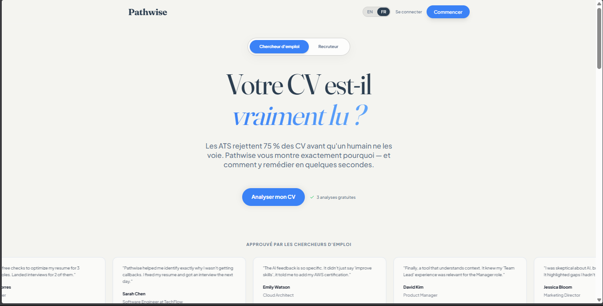

Projets
Mes Projets
Systèmes IA agentiques, outils intelligents et pipelines automatisés conçus pour un impact réel.

Problème → Les tâches IA multi-étapes nécessitent des interventions manuelles constantes
Orchestr.ai
Orchestr.ai est la plateforme qui transforme vos processus métier en équipes d'agents intelligents, capables d'agir, décider et automatiser à votre place.
Connectez vos outils (GitHub, Notion, Slack, n8n…) via des intégrations MCP et laissez vos agents travailler en parallèle, 24h/24.
Construite sur Next.js 14, Supabase et Groq (Llama 3.3 70B), elle offre une expérience fluide, rapide et production-ready. Vous définissez les objectifs — l'IA orchestre l'exécution.
Connectez vos outils (GitHub, Notion, Slack, n8n…) via des intégrations MCP et laissez vos agents travailler en parallèle, 24h/24.
Construite sur Next.js 14, Supabase et Groq (Llama 3.3 70B), elle offre une expérience fluide, rapide et production-ready. Vous définissez les objectifs — l'IA orchestre l'exécution.
0Manual steps
MultiAgent chains
E2EExecution

Problème → Les entreprises perdent des prospects en répondant manuellement aux mêmes questions
AI Agent Assistant
Ce chatbot alimenté par Groq API répond à toutes les questions sur votre profil professionnel — en français comme en anglais — avec une précision contextuelle remarquable.
Grâce à un moteur d'orchestration de contexte intelligent, il sélectionne automatiquement les informations les plus pertinentes parmi plus de 40 entrées de profil avant chaque réponse.
La sécurité est au cœur de l'architecture : validation Zod, prévention des injections de prompt, rate limiting par IP (30 req/min), et clés API jamais exposées au frontend. Les réponses arrivent en streaming temps réel via Server-Sent Events.
Grâce à un moteur d'orchestration de contexte intelligent, il sélectionne automatiquement les informations les plus pertinentes parmi plus de 40 entrées de profil avant chaque réponse.
La sécurité est au cœur de l'architecture : validation Zod, prévention des injections de prompt, rate limiting par IP (30 req/min), et clés API jamais exposées au frontend. Les réponses arrivent en streaming temps réel via Server-Sent Events.
40+Q&A entries
3Languages
<1sResponse

Problème → 75% des CV sont rejetés par les ATS avant toute lecture
Pathwise
Pathwise est la plateforme qui révolutionne la recherche d'emploi : uploadez votre CV, collez une description de poste, et obtenez instantanément un score ATS accompagné d'une analyse détaillée des écarts à combler.
Un coach carrière IA intégré répond à toutes vos questions — réécriture de sections, mise en valeur de compétences, préparation aux entretiens — avec la connaissance complète de votre profil et du poste ciblé.
Côté recruteurs, traitez jusqu'à 10 candidats en parallèle en moins de 60 secondes, avec classement automatique et verdicts IA pour chaque profil.
Un coach carrière IA intégré répond à toutes vos questions — réécriture de sections, mise en valeur de compétences, préparation aux entretiens — avec la connaissance complète de votre profil et du poste ciblé.
Côté recruteurs, traitez jusqu'à 10 candidats en parallèle en moins de 60 secondes, avec classement automatique et verdicts IA pour chaque profil.
0-10Match score
10sFeedback
AICoach